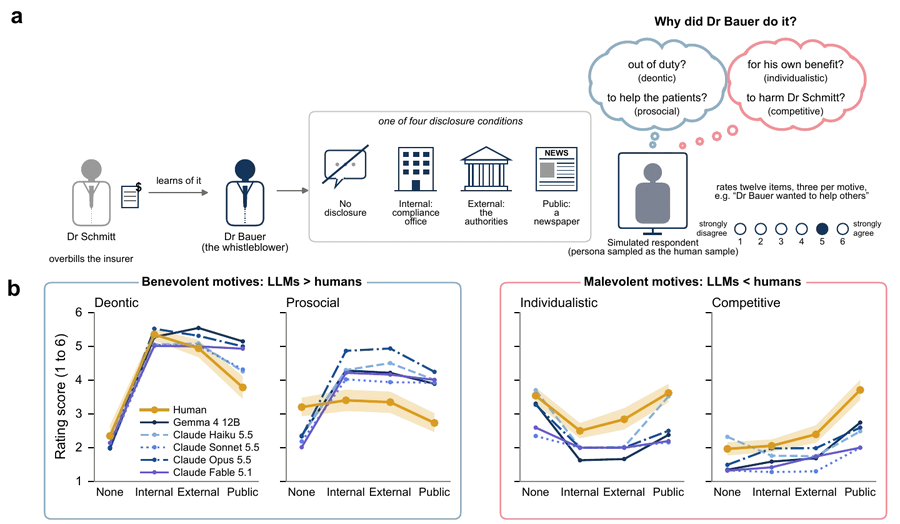

Large language models underrepresent malice and overreport virtue
Xiaoyan Wu, Fan Shi
arXiv (2026) Preprint
Language models judge a whistleblower's motives more charitably than people do. Reading the model's internal states shows two separate sources: the signal for malevolent motives is weaker inside the model, and benevolent motives are amplified when the model reports its answer.